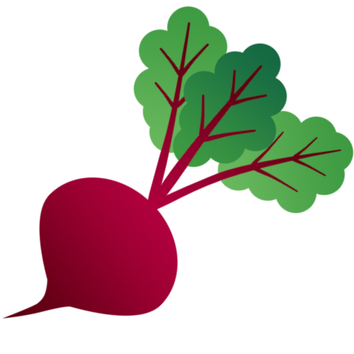

Yes, this website is bad. Deal with it.

On September 12th, 2024, THE BEET EMOJI WAS OFFICIALLY RELEASED!!! Here it is: . It finished rolling out to all updated devices in 2025.
On November 1st, 2023, the beet emoji was accepted by the Unicode Consortium. There is a post about it on their
website here.
The Beet Story
One winter day during COVID, my new housemate Daniel asked me, "what do you want from the store?" I wasn't sure.
But I did know that earlier that week I had had beets, and they had been good! I had used my mom's tried and
true beet recipe (below). So I said, "how about three beets?"
Daniel was not amused. "THREE BEETS?? What kind of a request is that???" But he got the beets
anyway. And that Thursday, I made them.
Now until that point Daniel had only had boiled and canned beets before. Boiled and canned beets, frankly, are simply bad. Once he tried
my beets, his life was changed. He liked beets. And the next week, when he asked, "want anything from the store?"
I, of course, said beets. And that began the COVID tradition of Beet Thursday.
During those dark COVID days the wall of our living room had a decorative octopus on it. The octopus would usually
have a speech bubble coming out, saying various things. One day I got up to have breakfast and saw that it was
holding a shovel and the speech bubble read "time to plant some beets!"
It was. I immediately ordered a small planter that could fit on the fire escape outside my window. I ordered some
beet seeds, and planted beets. Eventually they grew, and I had a feast. Though alas, I was unable to share it
with Daniel, because at that point there were only summer subletters. Sad.
Also during this time, Jessica, Daniel's fiance and also my housemate, said to me that she wished there were a beet
emoji, which she could use to react to all of the beet messages I sent in the house group chat. Never
to be outdone with Jessica and Daniel's dares, I set about attempting to make this a reality. In August 2021 I
submitted the beet emoji proposal
to the Unicode Consortium. In November 2023, it was accepted!
I went to Daniel and Jessica's wedding in 2022. I was the emcee. I gave them a packet of
beet seeds, which I hoped could grow along with their love. Much to my surprise, Jessica
and pulled out her own packet of beet seeds; they had decided to get me the same present I had gotten them!
In 2023, I had the good fortune to meet Professor Irwin Goldman, a Professor of beets, carrots and onions
at the University of Wisconsin Madison. Professor Goldman referred to the acceptance of the beet emoji as "the best news of 2023 so far." I
encourage you to check out his talk about the history of beets.
You should eat beets. If you have never had them before, I am sorry. Use my mom's tried and true recipe: